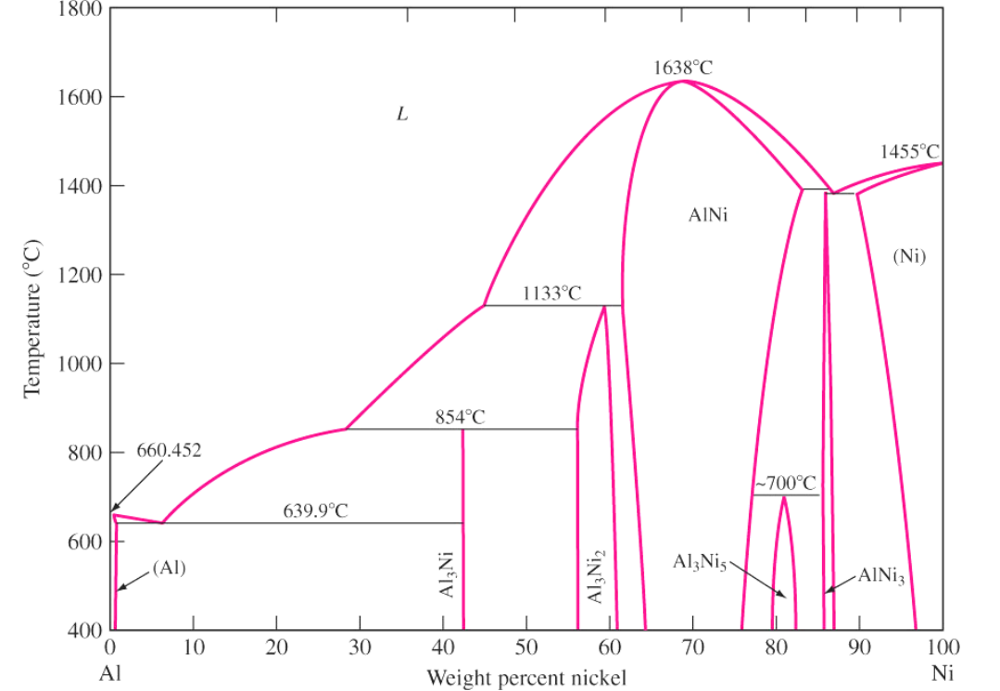
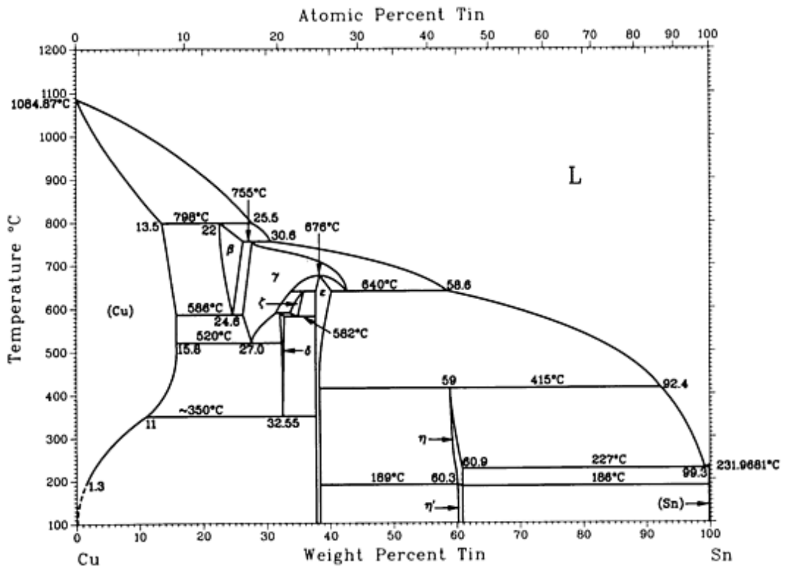
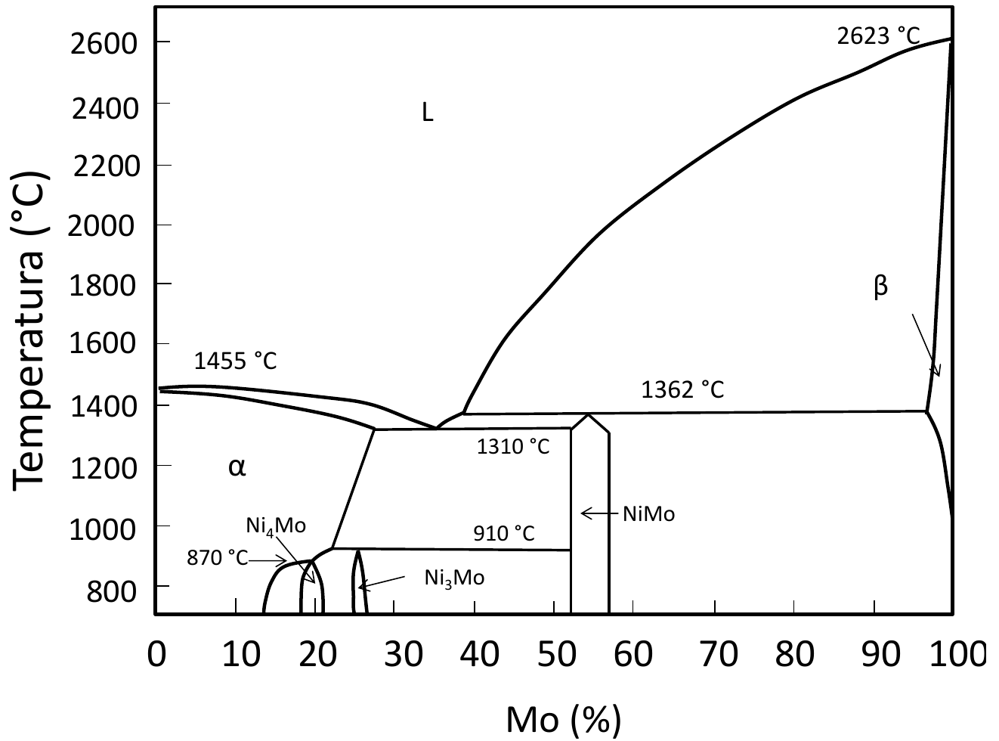
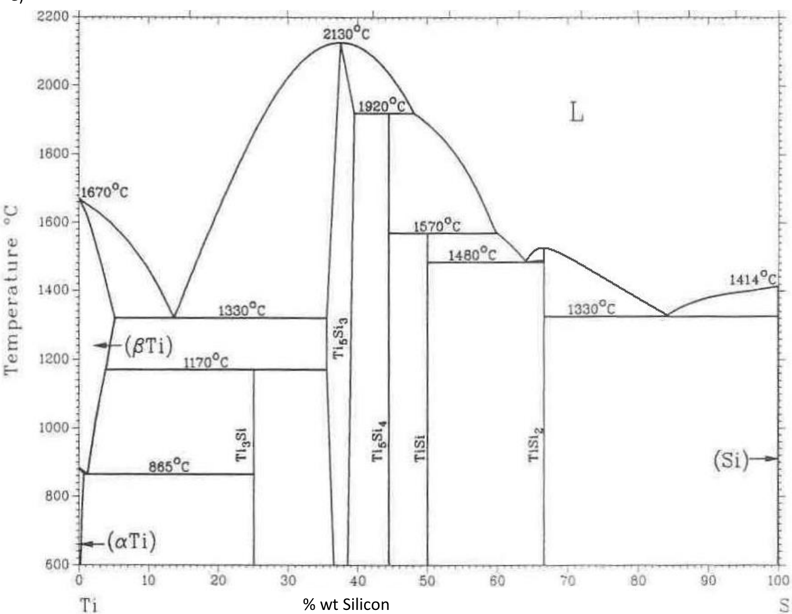
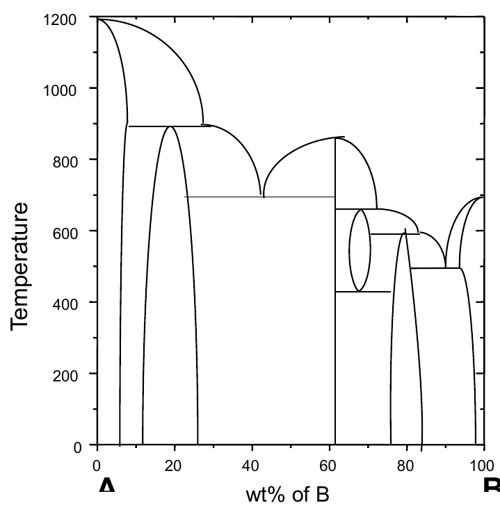
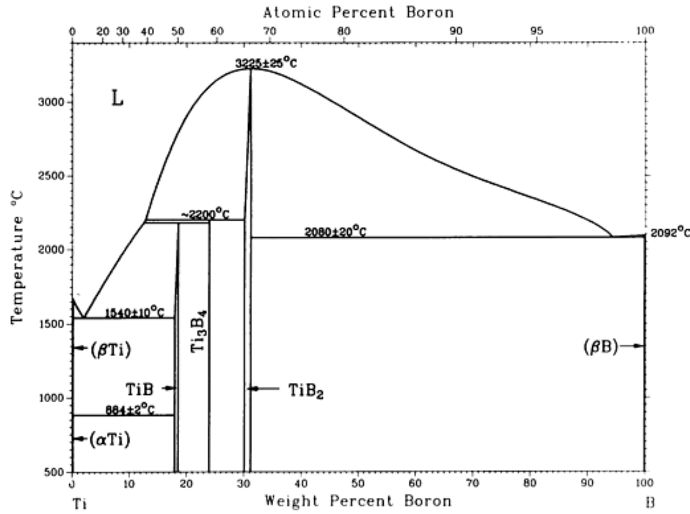

Topic 4: Solved Problems
Step-by-step solutions of problems 1-15 of the official sheet on phase diagrams (Problems T4_PhaseDiagrams I): the tie line and the lever rule of Session 7, and the invariant reactions and compounds of Session 8, written in four phases and checked against the official solutions.
| System | Eutectic | α limit | β limit | Melting points |
|---|---|---|---|---|
| Pb-Sn (sheet p. 1) | 61.9 wt% Sn, 183 °C | 19.2 wt% Sn | 97.5 wt% Sn | 327 °C (Pb), 232 °C (Sn) |
| Ag-Cu (sheet p. 2) | 28.1 wt% Cu, 779.1 °C | 8.8 wt% Cu | 92 wt% Cu | 961.93 °C (Ag), 1084.87 °C (Cu) |
Problem 1
Problems T4_PhaseDiagrams I.pdf #1
Lever rule · two equations
Click to Collapse ▲
Phase Limits from the Phase Fractions of Two Alloys
Original statement · Problems T4_PhaseDiagrams I.pdf
1. In the phase diagram of two hypothetic metals, A and B, there is a phase α rich in A and a phase β rich in B. Given the mass fraction of two alloys for a specific temperature (table), determine the composition of the phase limits (or solid solubility limits) of the α and β phases at such temperature.
| Alloy composition | Fraction of α phase | Fraction of β phase |
|---|---|---|
| 30% B | 0.78 | 0.22 |
| 65% B | 0.36 | 0.64 |
Hypotheses
- Equilibrium: both alloys are at the same temperature, in equilibrium, and both contain α and β only, so both lie in the α + β two-phase region [Session 7 Slide 26].
- One tie line: at a fixed temperature and pressure, a two-component, two-phase system has $F = C - P + 1 = 2 - 2 + 1 = 1$ degree of freedom, already used by the temperature [Session 7 Slide 13]. The compositions of α and β are therefore the same for both alloys: $C_\alpha$ and $C_\beta$ are the two ends of one tie line.
- Mass fractions obey the lever rule [Session 7 Slide 16].
Data
| Quantity | Alloy 1 | Alloy 2 |
|---|---|---|
| Overall composition $C_0$ (% B) | 30 | 65 |
| $W_\alpha$ | 0.78 | 0.36 |
| $W_\beta$ | 0.22 | 0.64 |
Unknowns: $C_\alpha$ and $C_\beta$ (% B). Two unknowns and two independent equations (one per alloy; $W_\beta = 1 - W_\alpha$ adds nothing new).
The only frame is the phase diagram itself: composition in % B along the horizontal axis and temperature along the vertical axis. All the work is done on one horizontal line (the tie line at the given temperature), so it is one-dimensional and no change of basis is involved.
Why the lever rule. It is the tool that relates the amounts of the phases to the positions of the alloy and of the phase limits on the tie line [Session 7 Slide 16]:
Writing it once for each alloy gives two linear equations in $C_\alpha$ and $C_\beta$.
1. The two equations Call $D = C_\beta - C_\alpha$ the length of the tie line. Multiplying the lever rule by $D$:
Alloy 1 ($C_0 = 30$, $W_\alpha = 0.78$) and alloy 2 ($C_0 = 65$, $W_\alpha = 0.36$):
2. Length of the tie line Subtracting (2) from (1) eliminates $C_\beta$:
3. Limit of β From (1):
4. Limit of α
Checks
- β fractions (not used in the solution): $W_\beta = \dfrac{C_0 - C_\alpha}{C_\beta - C_\alpha}$ gives $\dfrac{30 - 11.67}{83.33} = 0.22$ and $\dfrac{65 - 11.67}{83.33} = 0.64$, exactly the values of the table.
- Mass balance of B for alloy 1: $0.78 \times 11.67 + 0.22 \times 95.0 = 9.10 + 20.90 = 30.0\ \%$B $= C_0$.
- Order: $C_\alpha = 11.7 < 30 < 65 < 95 = C_\beta$, so both alloys are indeed inside the α + β region, as assumed.
- Units: all compositions are in % B (mass), fractions are dimensionless; each equation is homogeneous in % B.
Interpretation At this temperature α can dissolve at most 11.7 % B and β at most 5 % A (95 % B). The alloy closer to the α limit (30 % B) has more α, as the lever rule predicts.
Check against the official solution
The official solution gives $C_\alpha = 11.7\%$ and $C_\beta = 95\%$; the result agrees. The official solutions PDF has no worked page for this problem; only the key of the statement is available.
Problem 2
Problems T4_PhaseDiagrams I.pdf #2
Pb-Sn · hypereutectic
Click to Collapse ▲
Primary and Total β in a Pb-Sn Alloy
Original statement · Problems T4_PhaseDiagrams I.pdf
2. From 2.8 kg of a Sn-Pb alloy, is it possible to have 2.21 kg of primary β and 2.53 kg of β total at (183 − ΔT) °C? Justify your answer.
Hypotheses
- Equilibrium cooling with the Pb-Sn diagram of the problem sheet (Problems T4_PhaseDiagrams I.pdf, p. 1): eutectic at $C_e = 61.9$ wt% Sn and 183 °C; at 183 °C the α limit is $C_\alpha = 19.2$ wt% Sn and the β limit $C_\beta = 97.5$ wt% Sn.
- Primary β exists only in a hypereutectic alloy ($61.9 < C_0 < 97.5$ wt% Sn): it is the β that forms in the β + L region before the eutectic reaction [Session 7 Slide 31].
- Just below the eutectic temperature the primary β keeps the amount it had just above it, and the liquid present just above becomes the eutectic [Session 7 Slide 32].
- "% B" in the key means wt% Sn (B is the Sn-rich side of the diagram).
Data
| Quantity | Value |
|---|---|
| Mass of alloy $m$ | 2.8 kg |
| Mass of primary β $m_{\beta'}$ | 2.21 kg |
| Mass of total β $m_\beta$ (at 183 − ΔT) | 2.53 kg |
| $C_\alpha$, $C_e$, $C_\beta$ at 183 °C | 19.2, 61.9, 97.5 wt% Sn |
Unknown: the composition $C_0$. There is one unknown and two conditions, so the question is whether both masses can be met by the same $C_0$.
The frame is the Pb-Sn diagram, composition in wt% Sn and temperature in °C; the work is on the horizontal tie lines just above and just below 183 °C, so it is one-dimensional and no change of basis is needed.
Strategy. The primary β fixes $C_0$ through the lever rule on the short tie line between the eutectic liquid and β (microconstituents). The total β is then predicted with the lever rule on the long tie line between α and β (phases), and compared with 2.53 kg. If they agree, the answer is yes.
1. Mass fraction of primary β
2. Composition of the alloy Just above 183 °C the alloy is β (97.5 wt% Sn) plus liquid of eutectic composition (61.9 wt% Sn). The lever rule gives the β fraction, which is the primary β [Session 7 Slide 32]:
Solving for $C_0$:
$61.9 < 90.0 < 97.5$: the alloy is hypereutectic, as primary β requires.
3. Total β predicted for this alloy Just below 183 °C the phases are α (19.2 wt% Sn) and β (97.5 wt% Sn):
4. Answer Both conditions are met by the same alloy: yes, it is possible, with a Pb-90 wt% Sn alloy.
Checks
- Eutectic part: mass of eutectic $= 2.8 - 2.21 = 0.59$ kg; β inside it $= 2.53 - 2.21 = 0.32$ kg, a fraction $0.32 / 0.59 = 0.54$. The eutectic of the sheet diagram has $W_{\beta,e} = (61.9 - 19.2)/(97.5 - 19.2) = 42.7/78.3 = 0.545$ of β, and $0.545 \times 0.59 = 0.32$ kg: consistent.
- Units: masses in kg, fractions dimensionless, compositions in wt% Sn.
Interpretation The two masses are not independent: once the primary β fixes the composition, the total β is fixed too. A different total β (say 2.40 kg) would have been impossible for any alloy.
Check against the official solution
The official key ("Yes, for an alloy with composition $C_0 = 90\%$") agrees. The worked page (Solution problems Phase diagrams I.pdf, p. 6) finds $C_0 = 90\%$ from the primary β only; the check of the total β (2.53 kg) above completes the justification. The page writes the fraction as "079"; it is 0.79.
Problem 3
Problems T4_PhaseDiagrams I.pdf #3
Pb-Sn · hypereutectic
Click to Collapse ▲
Phases and Microconstituents of a Pb-80 wt% Sn Alloy
Original statement · Problems T4_PhaseDiagrams I.pdf
3. Using the Pb-Sn phase diagram for an alloy composition of Pb-80%Sn, indicate at the temperatures of $T_1 = 250$ ºC, $T_2 = 183 + \Delta T$ ºC, $T_3 = 183 - \Delta T$ ºC, $T_4 = 100$ ºC: a) The phases present, chemical composition of the phases and mass fraction. b) The micro constituents, chemical composition and mass fractions. Note the agreement that exists between the data obtained in (a) and (b).
Hypotheses
- Equilibrium cooling, Pb-Sn diagram of the problem sheet (p. 1): eutectic at 61.9 wt% Sn and 183 °C; at 183 °C, α of 19.2 and β of 97.5 wt% Sn.
- Values at 250 °C and 100 °C are readings of the figure: at 250 °C the alloy is above the liquidus on the Sn side (which goes from 183 °C at 61.9 wt% Sn to 232 °C at 100 wt% Sn); at 100 °C the solvus lines give α of about 5 and β of about 100 wt% Sn.
- $C_0 = 80$ wt% Sn lies between 61.9 and 97.5: a hypereutectic alloy, so the primary phase is β [Session 7 Slide 31].
Data
| Temperature | Region | Phase compositions (wt% Sn) |
|---|---|---|
| $T_1 = 250$ °C | L | $C_L = 80$ |
| $T_2 = 183 + \Delta T$ | β + L | $C_L = 61.9$, $C_\beta = 97.5$ |
| $T_3 = 183 - \Delta T$ | α + β | $C_\alpha = 19.2$, $C_\beta = 97.5$ |
| $T_4 = 100$ °C | α + β | $C_\alpha = 5$, $C_\beta = 100$ |
The frame is the Pb-Sn diagram (wt% Sn, °C). At each temperature the work is on one horizontal tie line, so it is one-dimensional; no change of basis is needed.
Method. (a) Tie line for the compositions, lever rule for the fractions [Session 7 Slides 15-16]. (b) Below the eutectic temperature, the lever rule on the short tie line (β to eutectic liquid) gives the microconstituents, and the long tie line (α to β) gives the phases [Session 7 Slide 32]; comparing both answers part (b)'s "agreement".
a) Phases $T_1 = 250$ °C. Above the liquidus: one phase, liquid with the composition of the alloy. $C_L = 80$ wt% Sn, $W_L = 1$.
$T_2 = 183 + \Delta T$. Region β + L; tie line from $C_L = 61.9$ to $C_\beta = 97.5$ (length $97.5 - 61.9 = 35.6$):
$T_3 = 183 - \Delta T$. Region α + β; tie line from 19.2 to 97.5 (length 78.3):
$T_4 = 100$ °C. Region α + β; tie line from 5 to 100 (length 95):
b) Microconstituents At $T_1$ and $T_2$ the microconstituents are the phases themselves (liquid; primary β + liquid).
At $T_3$ there are two microconstituents: primary β (97.5 wt% Sn), formed in the β + L region, and eutectic (overall 61.9 wt% Sn), formed from the liquid present at $T_2$. With $P = C_0 - C_e$ and $Q = C_\beta - C_0$ on the short tie line:
Phases inside the eutectic:
(all the α is in the eutectic, since the primary phase is β).
Agreement between (a) and (b)
- $W_{\beta,E} + W_{\alpha,E} = 0.268 + 0.224 = 0.492 = W_E$: the phases of the eutectic add up to the eutectic.
- Inside the eutectic, α is $0.224 / 0.492 = 0.455$, the same as the eutectic product of the sheet diagram, $(97.5 - 61.9)/(97.5 - 19.2) = 35.6/78.3 = 0.455$.
- Mass balance at $T_3$: $0.224 \times 19.2 + 0.776 \times 97.5 = 4.30 + 75.66 = 80.0$ wt% Sn.
Interpretation Below 183 °C the alloy is about half primary β and half eutectic. On further cooling to 100 °C the solvus lines move outwards (α purer in Pb, β practically pure Sn) and the amounts of the phases change slightly (α from 0.224 to 0.211) by solid-state precipitation, while the microconstituents keep their shape.
Check against the official solution
All the values agree with the key ($w_L = 0.49$, $w_\alpha = 0.22$, $w_\alpha = 0.21$; $w_E = 0.49$, $w_{\beta'} = 0.51$).
Solution problems Phase diagrams I.pdf, p. 7, writes "T2; phases α and L"; the phases at $T_2$ are β and L (the alloy is hypereutectic). On the same page the $T_3$ formula is printed with the denominator $97.5 - 61.9$, but the value 0.22 corresponds to $97.5 - 19.2 = 78.3$: $17.5 / 35.6$ would give 0.49, while $17.5 / 78.3 = 0.22$. The numbers of the page are right; the labels and that denominator are not.
Problem 4
Problems T4_PhaseDiagrams I.pdf #4
Pb-Sn · hypoeutectic
Click to Collapse ▲
Phases and Microconstituents of a Pb-30 wt% Sn Alloy
Original statement · Problems T4_PhaseDiagrams I.pdf
4. Using the Pb-Sn phase diagram for an alloy composition of Pb-30%Sn, indicate at the temperatures of $T_1 = 250$ ºC, $T_2 = 183 + \Delta T$ ºC, $T_3 = 183 - \Delta T$ ºC, $T_4 = 100$ ºC: a) The phases present, chemical composition of the phases and mass fraction. b) The micro constituents, chemical composition and mass fractions. Note the agreement that exists between the data obtained in (a) and (b).
Hypotheses
- Equilibrium cooling, Pb-Sn diagram of the problem sheet (p. 1): eutectic at 61.9 wt% Sn and 183 °C; α of 19.2 and β of 97.5 wt% Sn at 183 °C.
- Readings of the figure: at 250 °C the tie line meets the α solidus at 12 wt% Sn and the liquidus at 36 wt% Sn; at 100 °C the solvus lines give α of 5 and β of 100 wt% Sn (the same readings as the official solution).
- $19.2 < C_0 = 30 < 61.9$: a hypoeutectic alloy, so the primary phase is α [Session 7 Slide 30]. This is the same kind of alloy as the hypoeutectic example of the slides.
Data
| Temperature | Region | Phase compositions (wt% Sn) |
|---|---|---|
| $T_1 = 250$ °C | α + L | $C_\alpha = 12$, $C_L = 36$ |
| $T_2 = 183 + \Delta T$ | α + L | $C_\alpha = 19.2$, $C_L = 61.9$ |
| $T_3 = 183 - \Delta T$ | α + β | $C_\alpha = 19.2$, $C_\beta = 97.5$ |
| $T_4 = 100$ °C | α + β | $C_\alpha = 5$, $C_\beta = 100$ |
Frame: the Pb-Sn diagram (wt% Sn, °C); one horizontal tie line per temperature, so no change of basis is needed.
Method. Tie line and lever rule at each temperature [Session 7 Slides 15-16]; below 183 °C, the short tie line (α to eutectic liquid) gives the microconstituents and the long one (α to β) the phases [Session 7 Slide 32].
a) Phases $T_1 = 250$ °C. α + L; tie line from 12 to 36 (length 24):
$T_2 = 183 + \Delta T$. α + L; tie line from 19.2 to 61.9 (length 42.7):
$T_3 = 183 - \Delta T$. α + β; tie line from 19.2 to 97.5 (length 78.3):
$T_4 = 100$ °C. α + β; tie line from 5 to 100 (length 95):
b) Microconstituents At $T_1$ and $T_2$ they coincide with the phases (α + liquid). At $T_3$: primary α (19.2 wt% Sn) and eutectic (61.9 wt% Sn overall):
Phases inside the eutectic:
Agreement between (a) and (b)
- $W_{\alpha,E} + W_{\beta,E} = 0.115 + 0.138 = 0.253 = W_E$.
- Inside the eutectic, α is $0.115 / 0.253 = 0.455$, the eutectic product of the sheet diagram ($35.6/78.3 = 0.455$), the same as in Problem 3: the eutectic has the same make-up whatever the alloy.
- Mass balance at $T_3$: $0.862 \times 19.2 + 0.138 \times 97.5 = 16.55 + 13.45 = 30.0$ wt% Sn.
Interpretation The alloy is three quarters primary α in one quarter of eutectic, the structure of the hypoeutectic micrograph of Slide 30. From 250 °C to 183 °C the amount of α grows from 25 % to 75 % while the liquid gets richer in Sn, from 36 to 61.9 wt%.
Check against the official solution
The values agree with the key ($w_L = 0.75$, $0.25$; $w_\alpha = 0.86$, $0.74$; $w_E = 0.25$, $w_{\alpha'} = 0.75$). The α inside the eutectic is $0.862 - 0.747 = 0.115$; the worked page writes 0.11 because it subtracts the rounded values $0.86 - 0.75$.
Solution problems Phase diagrams I.pdf, p. 10, gives for $T_4$ the numbers of Problem 3: $\chi_\alpha = (100 - 80)/(100 - 5) = 0.21$ and $\chi_{\beta,\text{total}} = 0.79$. For this alloy ($C_0 = 30$) the correct values are $W_\alpha = 70/95 = 0.74$ and $W_\beta = 0.26$, as the key of the statement says. The $T_1$ formula on p. 9 is also printed with the wrong labels ($C_o - C_\beta$ over $C_E - C_\alpha$), while its numbers, $(30 - 12)/(36 - 12) = 0.75$, are right.
Problem 5
Problems T4_PhaseDiagrams I.pdf #5
Ag-Cu · eutectic
Click to Collapse ▲
The Eutectic Ag-28.1 wt% Cu Alloy
Original statement · Problems T4_PhaseDiagrams I.pdf, p. 2
5. Given an alloy Ag-28.1%Cu, indicate for the given temperatures, $T_1 = 900$ °C; $T_2 = (780 + \Delta T)$ °C; $T_3 = (780 - \Delta T)$ °C: a. Present phases, chemical composition of phases and mass fraction. b. Microconstituents, chemical composition and mass fraction at $T_3$.
Hypotheses
- Equilibrium cooling with the Ag-Cu diagram of the problem sheet (p. 2): eutectic at 28.1 wt% Cu and 779.1 °C (the statement rounds it to 780 °C); at that temperature (Ag) = α contains 8.8 wt% Cu and (Cu) = β contains 92 wt% Cu. Melting points: 961.93 °C (Ag) and 1084.87 °C (Cu).
- $C_0 = 28.1$ wt% Cu is exactly the eutectic composition [Session 7 Slides 26-27].
Data
| Quantity | Value |
|---|---|
| $C_0$ | 28.1 wt% Cu |
| $C_\alpha$, $C_e$, $C_\beta$ at the eutectic temperature | 8.8, 28.1, 92 wt% Cu |
| Eutectic temperature | 779.1 °C ≈ 780 °C |
Frame: the Ag-Cu diagram (wt% Cu, °C), one horizontal tie line per temperature; no change of basis is needed.
Why no lever rule above 780 °C. The eutectic liquid meets both liquidus lines at their lowest point, so it never enters a two-phase L + solid region: it stays liquid down to the eutectic temperature and then transforms at once, $L \rightarrow \alpha + \beta$ [Session 7 Slide 27].
a) Phases $T_1 = 900$ °C. Above the liquidus: liquid, $C_L = 28.1$ wt% Cu, $W_L = 1$.
$T_2 = 780 + \Delta T$. Still above the eutectic point: liquid, $C_L = 28.1$ wt% Cu, $W_L = 1$.
$T_3 = 780 - \Delta T$. α + β; tie line from 8.8 to 92 (length $92 - 8.8 = 83.2$):
b) Microconstituents at $T_3$ All the liquid of $T_2$ became eutectic: one microconstituent, the eutectic, $W_E = 1$, with overall composition 28.1 wt% Cu. Inside it: α (8.8 wt% Cu) with mass fraction 0.768 and β (92 wt% Cu) with mass fraction 0.232.
Checks
- $W_\alpha + W_\beta = 0.768 + 0.232 = 1$.
- Mass balance: $0.768 \times 8.8 + 0.232 \times 92 = 6.76 + 21.34 = 28.1$ wt% Cu $= C_0$.
- Phase rule at the eutectic point (1 atm): $F = 2 - 3 + 1 = 0$, so the transformation happens at one temperature, with a plateau in the cooling curve, like a pure metal [Session 7 Slide 27].
Interpretation The eutectic alloy has the lowest melting point of the system (779 °C, well below 961.93 °C for Ag and 1084.87 °C for Cu) and solidifies at a single temperature into a fine layered mixture of a Ag-rich and a Cu-rich solid.
Check against the official solution
Agrees with the key: $x_\alpha = 0.77$, $x_\beta = 0.23$; 100 % eutectic. The official solutions PDF has no worked page for this problem.
Problem 6
Problems T4_PhaseDiagrams I.pdf #6
Ag-Cu · hypereutectic
Click to Collapse ▲
The Hypereutectic Ag-80 wt% Cu Alloy
Original statement · Problems T4_PhaseDiagrams I.pdf, p. 2
6. Using the Cu-Ag phase diagram, for an alloy with composition $C_0$ = 80% Cu, for temperatures $T_1 = 900$ °C; $T_2 = (780 + \Delta T)$ °C; $T_3 = (780 - \Delta T)$ °C, determine: a. Present phases, chemical composition of phases and mass fraction. b. Microconstituents, chemical composition and mass fraction at $T_3$.
Hypotheses
- Equilibrium cooling, Ag-Cu diagram of the problem sheet (p. 2): eutectic 28.1 wt% Cu at 779.1 °C ≈ 780 °C; α = (Ag) of 8.8 and β = (Cu) of 92 wt% Cu at that temperature.
- Reading of the figure at 900 °C: the tie line meets the Cu-side liquidus at 58 wt% Cu and the (Cu) solidus at 93 wt% Cu (the readings of the official solution).
- $28.1 < C_0 = 80 < 92$: a hypereutectic alloy, primary phase β [Session 7 Slide 31].
Data
| Temperature | Region | Phase compositions (wt% Cu) |
|---|---|---|
| $T_1 = 900$ °C | L + β | $C_L = 58$, $C_\beta = 93$ |
| $T_2 = 780 + \Delta T$ | L + β | $C_L = 28.1$, $C_\beta = 92$ |
| $T_3 = 780 - \Delta T$ | α + β | $C_\alpha = 8.8$, $C_\beta = 92$ |
Frame: the Ag-Cu diagram (wt% Cu, °C), one tie line per temperature; no change of basis. Lever rule for phases [Session 7 Slide 16]; short tie line (eutectic liquid to β) for the microconstituents [Session 7 Slide 32].
a) Phases $T_1 = 900$ °C (tie line length $93 - 58 = 35$):
$T_2 = 780 + \Delta T$ (length $92 - 28.1 = 63.9$):
$T_3 = 780 - \Delta T$ (length $92 - 8.8 = 83.2$):
b) Microconstituents at $T_3$ Proeutectic (primary) β of 92 wt% Cu, and eutectic of 28.1 wt% Cu overall:
Phases inside the eutectic:
Checks
- $W_{\alpha,E} + W_{\beta,E} = 0.144 + 0.044 = 0.188 = W_E$.
- Inside the eutectic α is $0.144 / 0.188 = 0.768$, the make-up of the eutectic alloy of Problem 5.
- Mass balance at $T_3$: $0.1442 \times 8.8 + 0.8558 \times 92 = 1.27 + 78.73 = 80.0$ wt% Cu.
Interpretation Between 900 °C and the eutectic temperature the amount of primary (Cu) grows from 63 % to 81 %, and the liquid becomes poorer in Cu, from 58 to 28.1 wt%. The final structure is mostly primary (Cu) crystals with about 19 % eutectic between them.
Check against the official solution
All values agree with the key. The worked page (Solution problems Phase diagrams I.pdf, pp. 11-12) adds a fourth temperature, $T_4 = 500$ °C, that is not in the statement of the sheet, and writes $\chi_{Cu,E} = 0.86 - 0.81 = 0.04$ (exactly $0.856 - 0.812 = 0.044$).
Problem 7
Problems T4_PhaseDiagrams I.pdf #7
Ag-Cu · hypoeutectic
Click to Collapse ▲
The Hypoeutectic Ag-10 wt% Cu Alloy
Original statement · Problems T4_PhaseDiagrams I.pdf, p. 2
7. Using the Cu-Ag phase diagram, for an alloy with composition $C_0$ = 10% Cu, for the temperatures $T_1 = 900$ °C, $T_2 = (780 + \Delta T)$ °C, $T_3 = (780 - \Delta T)$ °C, determine: a. Present phases, chemical composition of phases and mass fraction. b. Microconstituents, chemical composition and mass fraction at $T_3$.
Hypotheses
- Equilibrium cooling, Ag-Cu diagram of the problem sheet (p. 2): eutectic 28.1 wt% Cu at 779.1 °C ≈ 780 °C; α = (Ag) of 8.8 and β = (Cu) of 92 wt% Cu.
- Reading of the figure at 900 °C: the Ag-side liquidus falls from 961.93 °C (0 % Cu) to 779.1 °C (28.1 % Cu), and at 10 wt% Cu it is just below 900 °C, so at 900 °C the alloy is still liquid (as the official solution states).
- $8.8 < C_0 = 10 < 28.1$: a hypoeutectic alloy, very close to the α limit; the primary phase is α [Session 7 Slide 30].
Data
| Temperature | Region | Phase compositions (wt% Cu) |
|---|---|---|
| $T_1 = 900$ °C | L | $C_L = 10$ |
| $T_2 = 780 + \Delta T$ | α + L | $C_\alpha = 8.8$, $C_L = 28.1$ |
| $T_3 = 780 - \Delta T$ | α + β | $C_\alpha = 8.8$, $C_\beta = 92$ |
Frame: the Ag-Cu diagram (wt% Cu, °C), one tie line per temperature; no change of basis. Lever rule for the phases [Session 7 Slide 16] and for the microconstituents (short tie line from α to the eutectic liquid) [Session 7 Slide 32].
a) Phases $T_1 = 900$ °C. Liquid, $C_L = 10$ wt% Cu, $W_L = 1$.
$T_2 = 780 + \Delta T$ (tie line length $28.1 - 8.8 = 19.3$):
$T_3 = 780 - \Delta T$ (length $92 - 8.8 = 83.2$):
b) Microconstituents at $T_3$ Proeutectic (primary) α of 8.8 wt% Cu and eutectic of 28.1 wt% Cu overall:
Phases inside the eutectic:
Checks
- $W_{\alpha,E} + W_{\beta,E} = 0.048 + 0.014 = 0.062 = W_E$; inside the eutectic α is $0.048/0.062 = 0.77$, as in Problem 5.
- Mass balance at $T_3$: $0.9856 \times 8.8 + 0.0144 \times 92 = 8.67 + 1.33 = 10.0$ wt% Cu.
Interpretation The alloy is only 1.2 wt% Cu beyond the solubility limit of α, so almost all of it is primary (Ag) and just 6 % is eutectic, found as thin films between the α grains. An alloy below 8.8 wt% Cu would form no eutectic at all.
Check against the official solution
At $T_1$, $T_2$ and in part (b) the results agree with the key.
At $T_3$ the key gives $X_\alpha = 0.98$ and $X_\beta = 0.02$. With the data of the problem, $W_\alpha = 82/83.2 = 0.9856$ and $W_\beta = 1.2/83.2 = 0.0144$, which round to 0.99 and 0.01. The computed values are kept; the key's 0.98 and 0.02 are not reproduced by any rounding of the data.
Problem 8
Problems T4_PhaseDiagrams I.pdf #8
Diagram construction
Click to Collapse ▲
Drawing a Eutectic Diagram and the 40 % B Alloy
Original statement · Problems T4_PhaseDiagrams I.pdf, p. 3
8. Two metals (A and B) have partial solubility among each other. Metal A, with a melting point at 700 °C, can dissolve 5% of B at 0 °C, and its maximum solubility occurs at 400 °C, being 25% B. On the other hand, B metal melts at 600 °C, can dissolve 10% of A at 0 °C and its maximum solubility occurs at 400 °C, being 20% A. At 400 °C there is an eutectic reaction when the B content is 65%. a. Draw and identify the parts of the phase diagram in equilibrium (suppose straight lines). b. For an alloy 40% B, determine the phases composition and their relative proportions at 450 °C, 400 °C + ΔT and 400 °C − ΔT. c. For an alloy 40% B, draw its microstructure indicating the microconstituents and the mass fraction of each one. Additionally, indicate the mass fraction of each of the phases present in such microconstituents.
Hypotheses
- Binary eutectic system with partial solid solubility: α (rich in A) and β (rich in B) [Session 7 Slide 26].
- Straight lines between the given points, as the statement asks.
- Compositions in % B (mass); "20 % A" in β means 80 % B, and "10 % A" means 90 % B.
Points of the diagram
| Point | Composition (% B) | Temperature (°C) | Meaning |
|---|---|---|---|
| Melting point of A | 0 | 700 | top of α solidus and of the A-side liquidus |
| Melting point of B | 100 | 600 | top of β solidus and of the B-side liquidus |
| Eutectic point E | 65 | 400 | lowest point of the liquid |
| Max. solubility of B in α | 25 | 400 | end of the eutectic line, α side |
| Max. solubility of A in β | 80 | 400 | end of the eutectic line, β side |
| α solvus at 0 °C | 5 | 0 | |
| β solvus at 0 °C | 90 | 0 |
Frame: composition (% B) on the horizontal axis and temperature (°C) on the vertical one. Each boundary is a straight segment, so a composition on it at a temperature $T$ comes from linear interpolation between its two end points; the tie lines are horizontal. No change of basis is needed.
Lines of the diagram (part a):
- liquidus: $(0, 700) \to (65, 400)$ and $(100, 600) \to (65, 400)$;
- solidus: $(0, 700) \to (25, 400)$ for α and $(100, 600) \to (80, 400)$ for β;
- eutectic line: $(25, 400) \to (80, 400)$;
- solvus: $(25, 400) \to (5, 0)$ for α and $(80, 400) \to (90, 0)$ for β.
Regions: L above the liquidus; α + L and β + L between liquidus and solidus; α and β next to the axes, bounded by solidus and solvus; α + β below the eutectic line, between the solvus lines.
b) Phases of the 40 % B alloy 450 °C. The alloy is between the A-side liquidus and the α solidus: α + L. On a straight segment from $(0, 700)$ to $(C_1, 400)$ the composition at $T$ is $C = C_1 \dfrac{700 - T}{700 - 400}$:
400 °C + ΔT. Still α + L, with the ends of the tie line at the eutectic temperature: $C_\alpha = 25$, $C_L = 65$ % B (length 40):
400 °C − ΔT. α + β; $C_\alpha = 25$, $C_\beta = 80$ % B (length 55):
c) Microconstituents at 400 °C − ΔT $25 < 40 < 65$: hypoeutectic, so the microconstituents are proeutectic α (25 % B) and eutectic (65 % B overall). The α present just above 400 °C is the proeutectic α, and the liquid becomes eutectic [Session 7 Slide 32]:
Phases inside the eutectic:
The same numbers from the make-up of the eutectic, which is $(80 - 65)/(80 - 25) = 15/55 = 0.273$ α and $40/55 = 0.727$ β: $W_{\alpha,E} = 0.375 \times 0.273 = 0.102$ and $W_{\beta,E} = 0.375 \times 0.727 = 0.273$.
Checks
- Mass balance at 450 °C: $0.425 \times 20.83 + 0.575 \times 54.17 = 8.85 + 31.15 = 40.0$ % B.
- Mass balance at 400 °C − ΔT: $0.727 \times 25 + 0.273 \times 80 = 18.18 + 21.82 = 40.0$ % B.
- $W_{\alpha,E} + W_{\beta,E} = 0.102 + 0.273 = 0.375 = W_E$, and $W_{\alpha p} + W_{\alpha,E} = 0.625 + 0.102 = 0.727 = W_\alpha$.
Interpretation On cooling from the liquid, α starts to form at the liquidus ($700 - 300 \times 40/65 = 515$ °C for this alloy), grows to 62.5 % at the eutectic temperature, and the remaining 37.5 % of liquid, of 65 % B, becomes eutectic at 400 °C. Most of the eutectic is β (0.273 of the alloy), which is all the β of the alloy.
Check against the official solution
At 400 °C ± ΔT the results agree with the key (0.62/0.38 are 0.625/0.375; 0.73/0.27). The key writes "$C_\alpha$ = 25%Cu" at 400 °C + ΔT, a typo for 25 % B.
450 °C. The key reads $C_L = 55$ and $C_\alpha = 20$ % B from its drawing and gives $X_L = 0.57$, $X_\alpha = 0.43$. With the straight lines that the statement requires, linear interpolation gives $C_L = 54.17$ and $C_\alpha = 20.83$ % B, hence $W_L = 0.575$ and $W_\alpha = 0.425$. The difference comes from reading the drawing; the interpolated values are kept.
α in the eutectic. The key gives $X(\alpha_E) = 0.11$, which is $0.73 - 0.62$ with rounded values. Exactly, $0.7273 - 0.6250 = 0.1023$, confirmed by $0.375 \times 15/55 = 0.102$; the key's 0.11 is a rounding effect.
Problem 9
Problems T4_PhaseDiagrams I.pdf #9
Al-Ni · intermetallics
Click to Collapse ▲
Invariant Reactions and an Al-20 wt% Ni Alloy
Original statement · Problems T4_PhaseDiagrams I.pdf, p. 3
9. Given the Al-Ni phase diagram, answer the questions below. a. What is the maximum solubility of aluminum in solid state nickel? What about nickel in aluminum? b. Write down the invariant reactions, indicating the temperature, the reaction in equation form, the composition of each phase and the name of the reaction. c. Given an Al-20% Ni alloy, indicate at 400 °C: composition and mass fraction of the phases; composition and mass fraction of the microconstituents; draw the microstructure that can be expected when cooling in equilibrium conditions. Point out each microconstituent with arrows.

Hypotheses
- Equilibrium and the Al-Ni diagram of the sheet (weight percent nickel). Every composition and temperature below is a reading of the figure, to about ±1 wt% and ±10 °C, except the temperatures printed on it (639.9, 854, 1133, ~700, 1638 °C).
- Invariant reactions are the horizontal lines where three phases meet ($F = 2 - 3 + 1 = 0$) [Session 7 Slide 13; Session 8 Slide 6]; their type follows from the shape around the line (V above: eutectic; inverted V below: peritectic or peritectoid) [Session 8 Slide 6].
- Al₃Ni is drawn as a vertical line (stoichiometric compound) at about 42 wt% Ni [Session 8 Slide 15].
- The (Al) phase is the very thin field along the left axis; its solubility limit is about 1 wt% Ni at most.
Data read on the diagram
| Point | Reading |
|---|---|
| Eutectic at 639.9 °C | L ≈ 6 wt% Ni, (Al) ≈ 1 wt% Ni, Al₃Ni ≈ 42 wt% Ni |
| (Al) at 400 °C | ≈ 1 wt% Ni |
| (Ni) at its widest | ≈ 90 wt% Ni, i.e. ≈ 10 wt% Al |
Frame: the Al-Ni diagram (wt% Ni, °C). Each question is answered on horizontal lines (tie lines and invariant lines), so the work is one-dimensional and no change of basis is needed.
Strategy. (a) Maximum solubility = the widest point of each terminal solid solution. (b) Scan the diagram from the bottom up for horizontal lines and name each reaction by its shape. (c) Lever rule on the (Al)-Al₃Ni tie line for the phases, and on the short tie line from the eutectic liquid to Al₃Ni (just above 639.9 °C) for the microconstituents [Session 7 Slide 32].
a) Maximum solubilities
- Al in solid Ni: the (Ni) field is widest at its horizontal line near 1385 °C, at about 90 wt% Ni: about 10 wt% Al.
- Ni in solid Al: the (Al) field is widest at the eutectic temperature, 639.9 °C, at about 1 wt% Ni (the field is too thin to read more precisely).
b) Invariant reactions (on cooling)
| T (°C) | Reaction | Name |
|---|---|---|
| 639.9 | $L\,(6) \rightarrow (\text{Al})\,(1) + \text{Al}_3\text{Ni}\,(42)$ | eutectic |
| ~700 | $\text{AlNi}\,(76) + \text{AlNi}_3\,(86) \rightarrow \text{Al}_3\text{Ni}_5\,(81)$ | peritectoid |
| 854 | $L\,(28) + \text{Al}_3\text{Ni}_2\,(56) \rightarrow \text{Al}_3\text{Ni}\,(42)$ | peritectic |
| 1133 | $L\,(44) + \text{AlNi}\,(61) \rightarrow \text{Al}_3\text{Ni}_2\,(59)$ | peritectic |
| ≈1395 | $L\,(86.5) + \text{AlNi}\,(83) \rightarrow \text{AlNi}_3\,(86)$ | peritectic |
| ≈1385 | $L\,(86.5) \rightarrow \text{AlNi}_3\,(86) + (\text{Ni})\,(90)$ | eutectic |
(compositions in wt% Ni, readings of the figure). The two reactions near 1390 °C are only a few degrees and a few percent apart; the key gives them as 1400 °C (peritectic) and 1380 °C (eutectic).
c) Al-20 wt% Ni at 400 °C Phases. (Al) of about 1 wt% Ni and Al₃Ni of 42 wt% Ni (tie line length $42 - 1 = 41$):
Microconstituents. $6 < 20 < 42$: the alloy is hypereutectic with respect to the 639.9 °C eutectic, so Al₃Ni forms first (primary, proeutectic) and the remaining liquid of 6 wt% Ni becomes eutectic. Just above 639.9 °C (tie line from 6 to 42, length 36):
The microconstituents keep these amounts on cooling to 400 °C (Al₃Ni has a fixed composition and the (Al) solvus barely moves).
Checks
- Mass balance at 400 °C: $0.537 \times 1 + 0.463 \times 42 = 0.54 + 19.45 = 20.0$ wt% Ni.
- All the (Al) is inside the eutectic: $W_{(\text{Al})} = 0.537 < W_E = 0.611$, and the rest of the eutectic, $0.611 - 0.537 = 0.074$, is eutectic Al₃Ni; total Al₃Ni $= 0.389 + 0.074 = 0.463$ ✓.
Interpretation The alloy is mostly eutectic of soft (Al) with about 39 % of hard Al₃Ni crystals that grew from the liquid between about 800 °C (liquidus at 20 wt% Ni, reading) and 639.9 °C. The Ni-rich side of the diagram is crowded with intermetallic compounds formed by peritectic and peritectoid reactions.
Check against the official solution
Parts (a) and (b) agree with the key (10 % Al, 1 % Ni; eutectics at 639.9 and ~1380 °C, peritectoid at ~700 °C, peritectics at 854, 1133 and ~1400 °C). The key writes the compositions of part (c) as "%Cu"; they are wt% Ni.
For part (c) the key uses $C_{\text{Al}_3\text{Ni}} = 43$ % and a eutectic liquid of about 7 % Ni, and gives $X_\alpha = 0.55$, $X_{\text{Al}_3\text{Ni}} = 0.45$, eutectic 0.64 and primary Al₃Ni 0.36. The figure places the Al₃Ni line at about 42 % and the eutectic point at about 6 % Ni, which give 0.537/0.463 and 0.611/0.389. With the key's readings the same formulas give $(43 - 20)/(43 - 1) = 23/42 = 0.548$ for (Al) and $(43 - 20)/(43 - 7) = 23/36 = 0.64$ for the eutectic: the difference comes only from the readings, which are within the precision of the drawing. The values read here are kept.
Problem 10
Problems T4_PhaseDiagrams I.pdf #10
Cu-Sn · eutectoids
Click to Collapse ▲
Reactions and Eutectoids in the Cu-Sn System
Original statement · Problems T4_PhaseDiagrams I.pdf, p. 4
10. Considering the Cu-Sn phase diagram: a. Indicate the type of transformations, and write the reactions that take place at $T_1$ = 798 °C; $T_2$ = 755 °C; $T_3$ = 588 °C; $T_4$ = 415 °C; $T_5$ = 1084.87 °C. b. For a Cu-20%Sn alloy, indicate the phases and microconstituents, their composition and amount at $T_1$: 521 °C and $T_2$: 519 °C. c. Determine the percentage of Sn in an alloy having 54% liquid phase at 900 °C. Is this alloy in solid state at 700 °C?

Hypotheses
- Equilibrium, Cu-Sn diagram of the sheet (wt% Sn). Printed values: 798 °C with 13.5, 22 and 25.5 wt% Sn; 755 °C with 30.6; 586 °C with 24.6; 520 °C with 15.8 and 27.0; 415 °C with 59 and 92.4. The rest are readings of the figure (±1 wt%).
- The statement's 588 °C is the 586 °C line of the diagram.
- The type of each reaction follows from its shape [Session 8 Slide 6].
Data
| Line | Phases and compositions (wt% Sn) |
|---|---|
| 798 °C | (Cu) 13.5, β 22, L 25.5 |
| 755 °C | β ≈ 24, γ ≈ 25.5, L 30.6 |
| 586 °C | (Cu) 15.8, β 24.6, γ ≈ 25.5 |
| 520 °C | (Cu) 15.8, γ 27.0, δ ≈ 32 |
| 415 °C | ε ≈ 38, η 59, L 92.4 |
| 900 °C | (Cu) ≈ 9, L ≈ 19 (on the solidus and liquidus) |
Frame: the Cu-Sn diagram (wt% Sn, °C); all the work is on horizontal lines, so no change of basis is needed.
Strategy. (a) Name each line by its shape. (b) Lever rule on the tie lines just above and just below 520 °C; the microconstituents come from the history of the alloy (it crosses 798, 586 and 520 °C). (c) Write the lever rule for the liquid at 900 °C and solve it for $C_0$.
a) Transformations
| T | Reaction on cooling | Type |
|---|---|---|
| $T_1$ = 798 °C | $(\text{Cu})\,(13.5) + L\,(25.5) \rightarrow \beta\,(22)$ | peritectic |
| $T_2$ = 755 °C | $\beta\,(\approx 24) + L\,(30.6) \rightarrow \gamma\,(\approx 25.5)$ | peritectic |
| $T_3$ = 586 °C | $\beta\,(24.6) \rightarrow (\text{Cu})\,(15.8) + \gamma\,(\approx 25.5)$ | eutectoid |
| $T_4$ = 415 °C | $\varepsilon\,(\approx 38) + L\,(92.4) \rightarrow \eta\,(59)$ | peritectic |
| $T_5$ = 1084.87 °C | $L \rightarrow (\text{Cu})$ for pure Cu | solidification of a pure metal |
b) Cu-20 wt% Sn History. $13.5 < 20 < 22$: at 798 °C the peritectic consumes all the liquid and leaves (Cu) + β. On cooling, β is transformed at 586 °C by the eutectoid into (Cu) + γ, and γ at 520 °C by a second eutectoid into (Cu) + δ.
Just above 586 °C ((Cu) 15.8, β 24.6; length 8.8):
This (Cu) is proeutectoid, and this β becomes the eutectoid microconstituent at 586 °C.
At 521 °C (phases), (Cu) 15.8 and γ 27.0 (length 11.2):
Microconstituents at 521 °C: proeutectoid (Cu) 0.523 and eutectoid [(Cu) + γ] 0.477.
At 519 °C (phases), below the 520 °C eutectoid $\gamma\,(27.0) \rightarrow (\text{Cu})\,(15.8) + \delta\,(32)$; (Cu) 15.8 and δ ≈ 32 (length 16.2):
Microconstituents at 519 °C, counted with respect to the 520 °C reaction: the γ present at 521 °C (0.375) becomes eutectoid [(Cu) + δ], and all the (Cu) that existed before (0.625) counts as proeutectoid. That (Cu) is made of the proeutectoid (Cu) of 586 °C (0.523) plus the (Cu) of the first eutectoid ($0.625 - 0.523 = 0.102$).
c) Alloy with 54 % liquid at 900 °C At 900 °C the tie line goes from (Cu) at $C_S \approx 9$ to L at $C_L \approx 19$ wt% Sn (readings). The lever rule for the liquid:
Solid at 700 °C? $13.5 < 14.5 < 22$, so at 798 °C the peritectic uses up all the liquid: below 798 °C the alloy is (Cu) + β, both solid. At 700 °C the (Cu) boundary is at about 14.5 wt% Sn (it goes from 13.5 at 798 °C to 15.8 at 586 °C), so the alloy is (Cu), practically single-phase. Yes, it is solid at 700 °C.
Checks
- 519 °C: $0.741 \times 15.8 + 0.259 \times 32 = 11.71 + 8.29 = 20.0$ wt% Sn.
- 521 °C: $0.625 \times 15.8 + 0.375 \times 27.0 = 9.88 + 10.13 = 20.0$ wt% Sn.
- (c): with $C_0 = 14.4$, $W_L = (14.4 - 9)/(19 - 9) = 0.54$ ✓.
Interpretation The Cu-rich side of Cu-Sn (bronzes) shows how one alloy can cross several invariant reactions: a peritectic during solidification and two eutectoids in the solid. Each eutectoid turns a single solid phase into a fine two-phase mixture.
Check against the official solution
All values agree with the key: 0.37/0.63 and 0.48/0.52 at 521 °C; 0.26/0.74 and 0.37/0.63 at 519 °C (the key counts microconstituents with respect to the 520 °C reaction, as explained in part b); 14.5 % Sn. The key's part (c) does not answer the question about 700 °C.
The annotated diagram of Solution problems Phase diagrams I.pdf, p. 35, labels the field above the liquidus at about 50 % Sn and 900 °C as "(Cu)+ε"; that field is the liquid L, as the sheet's own diagram shows.
Problem 11
Problems T4_PhaseDiagrams I.pdf #11
Diagram construction
Click to Collapse ▲
Drawing a Diagram with a Stoichiometric Compound
Original statement · Problems T4_PhaseDiagrams I.pdf, p. 4
11. Draw the hypothetic phase diagram of A and B from the following data. a) Melting temperatures: A = 850 °C; B = 350 °C. b) A and B form an stoichiometric compound AB₂ that melts at 1000 °C; neither A nor B are soluble in the compound. c) There is an invariant eutectic point (70% at. of A, 700 °C). d) There is an invariant peritectic point (80% at. of B, 500 °C). e) The composition of the liquid at 500 °C is 95% at. of B. f) The solubility of B in A is 10% at. at 700 °C and 2% at. at 25 °C. g) The solubility of A in B is 25 % at. at 25 °C. Connect the points with straight lines. Indicate all the phase areas and points in the diagram, and write the reactions of the three phases.
Hypotheses
- Compositions in atomic percent of B (at.% B) on the horizontal axis; straight lines between the given points, as the statement asks.
- AB₂ contains two B atoms per A atom: $x_B = 2/3 = 66.7$ at.% B. It is stoichiometric and dissolves neither A nor B, so it is a vertical line [Session 8 Slide 15]; it melts at 1000 °C as a single phase, so it melts congruently (a maximum of the liquidus) [Session 8 Slide 17].
- The terminal solid solutions are α (B dissolved in A) and β (A dissolved in B).
- "80 % at. of B" for the peritectic point is the composition of the solid β formed there; the liquid at 500 °C has 95 at.% B (point e).
Points
| Point | at.% B | T (°C) |
|---|---|---|
| Melting point of A | 0 | 850 |
| Melting point of B | 100 | 350 |
| AB₂ (congruent melting) | 66.7 | 1000 |
| Eutectic E (liquid) | 30 | 700 |
| α at E (max. solubility of B in A) | 10 | 700 |
| α at 25 °C | 2 | 25 |
| Peritectic P (β formed) | 80 | 500 |
| Liquid at 500 °C | 95 | 500 |
| β at 25 °C (25 at.% A) | 75 | 25 |
Frame: composition (at.% B) against temperature (°C). The diagram is built from straight segments between the points; no change of basis is involved.
How the points connect.
- Left part (A to AB₂): a eutectic system between α and AB₂ [Session 7 Slide 26]: liquidus from A (0, 850) to E (30, 700) and from E up to AB₂ (66.7, 1000); α solidus from (0, 850) to (10, 700); eutectic line from α (10) to AB₂ (66.7) at 700 °C; α solvus from (10, 700) to (2, 25).
- Right part (AB₂ to B): a peritectic system [Session 8 Slide 8]: liquidus from AB₂ (66.7, 1000) down to (95, 500) and then to B (100, 350); peritectic line from AB₂ (66.7) to L (95) at 500 °C, with β (80) on it; β solidus from (80, 500) to B (100, 350); β solvus from (80, 500) to (75, 25).
The diagram
Phase areas
| Region | Bounded by |
|---|---|
| L | above the liquidus |
| α + L | 0-30 at.% B, between 850 and 700 °C |
| α | left of the α solidus and solvus |
| α + AB₂ | 10-66.7 at.% B, below 700 °C |
| L + AB₂ (left) | 30-66.7 at.% B, between 700 °C and the liquidus |
| L + AB₂ (right) | 66.7-95 at.% B, between 500 °C and the liquidus |
| AB₂ + β | 66.7 at.% B to the β solvus, below 500 °C |
| L + β | between the β solidus (80 → 100) and the liquidus (95 → 100), from 500 to 350 °C |
| β | right of the β solidus and solvus |
Reactions of three phases (on cooling)
- Eutectic, 700 °C: $L\,(30\ \text{at.\% B}) \rightarrow \alpha\,(10\ \text{at.\% B}) + \text{AB}_2\,(66.7\ \text{at.\% B})$
- Peritectic, 500 °C: $\text{AB}_2\,(66.7\ \text{at.\% B}) + L\,(95\ \text{at.\% B}) \rightarrow \beta\,(80\ \text{at.\% B})$
AB₂ melting at 1000 °C involves only two phases (AB₂ and a liquid of the same composition), so it is not a three-phase reaction.
Checks
- Each three-phase line has the middle phase in the right place: at 700 °C the liquid (30) lies between the two solids (10 and 66.7), the shape of a eutectic; at 500 °C the new solid β (80) lies between AB₂ (66.7) and L (95), with the liquid at one end, the shape of a peritectic [Session 8 Slide 6].
- Phase rule: on each horizontal line three phases coexist, $F = 2 - 3 + 1 = 0$; in each two-phase area $F = 1$ [Session 7 Slide 13].
Interpretation The compound AB₂ splits the diagram into two simpler diagrams, A-AB₂ (eutectic) and AB₂-B (peritectic). Since B melts at only 350 °C, the liquid persists to low temperatures on the B side, and β forms from AB₂ and the B-rich liquid at 500 °C.
Check against the official solution
The sheet gives no solution for this problem and the official solutions PDF has no page for it, so there is nothing to compare with.
Problem 12
Problems T4_PhaseDiagrams I.pdf #12
Ni-Mo · hypereutectic
Click to Collapse ▲
Invariant Reactions and a Ni-40 wt% Mo Alloy
Original statement · Problems T4_PhaseDiagrams I.pdf, p. 5
12. According to the Ni-Mo phase, indicate: a. The equations that represent the invariant reactions, specifying the composition of the phases, temperature and type of reaction. b. The maximum solubility of Mo in Ni and at what temperature it is produced. c. The maximum solubility of Ni in Mo and at what temperature it is produced. d. Melting temperature of Ni and Mo. e. Present phases, their composition and amount for a Ni-40%Mo alloy at 1309 °C. f. Microconstituents and their amount for a Ni-40%Mo alloy at 1309 °C. Sketch the microstructure.

Hypotheses
- Equilibrium, Ni-Mo diagram of the sheet (wt% Mo). Printed temperatures: 1455, 2623, 1362, 1310, 910 and 870 °C. Compositions are readings of the figure (±1 wt%).
- α is the Ni-rich solid solution and β the Mo-rich one; NiMo is an intermediate phase with a narrow composition range; Ni₃Mo and Ni₄Mo are compounds that form in the solid.
Data read on the diagram
| Line | Phases (wt% Mo) |
|---|---|
| 1310 °C | α ≈ 27, L ≈ 36, NiMo ≈ 52 |
| 1362 °C | L ≈ 38, NiMo ≈ 55, β ≈ 96 |
| 910 °C | α ≈ 22, Ni₃Mo ≈ 25, NiMo ≈ 52 |
Frame: the Ni-Mo diagram (wt% Mo, °C); one horizontal line per question, so no change of basis is needed. Reactions are named by their shape [Session 8 Slide 6]; amounts by the lever rule [Session 7 Slides 16, 32].
a) Invariant reactions (on cooling)
| T (°C) | Reaction | Type |
|---|---|---|
| 1362 | $L\,(38) + \beta\,(96) \rightarrow \text{NiMo}\,(55)$ | peritectic |
| 1310 | $L\,(36) \rightarrow \alpha\,(27) + \text{NiMo}\,(52)$ | eutectic |
| 910 | $\alpha\,(22) + \text{NiMo}\,(52) \rightarrow \text{Ni}_3\text{Mo}\,(25)$ | peritectoid |
At 870 °C the compound Ni₄Mo appears inside the α field (the small dome); only α and Ni₄Mo take part, so it is not a three-phase reaction.
b), c), d)
- Maximum solubility of Mo in Ni: about 27 wt% Mo (the key writes 26 %), at the eutectic temperature, 1310 °C.
- Maximum solubility of Ni in Mo: about 4 wt% Ni (β at 96 wt% Mo), at the peritectic temperature, 1362 °C.
- Melting points: Ni 1455 °C, Mo 2623 °C.
e) Phases of Ni-40 wt% Mo at 1309 °C Just below the eutectic: α (27) + NiMo (52), tie line length 25:
f) Microconstituents at 1309 °C $36 < 40 < 52$: the alloy is hypereutectic, so primary NiMo forms first and the liquid of 36 wt% Mo becomes eutectic. Short tie line from 36 to 52 (length 16):
Checks
- Mass balance at 1309 °C: $0.48 \times 27 + 0.52 \times 52 = 12.96 + 27.04 = 40.0$ wt% Mo.
- Phases inside the eutectic: all the α (0.48) and NiMo $0.52 - 0.25 = 0.27$; $0.48 + 0.27 = 0.75 = W_E$ ✓. The eutectic alone is $(52 - 36)/(52 - 27) = 16/25 = 0.64$ α, and $0.75 \times 0.64 = 0.48$ ✓.
Interpretation The alloy is three quarters eutectic (α + NiMo) with a quarter of primary NiMo crystals. On further cooling, the α and NiMo of this alloy reach the 910 °C peritectoid, where they react to form Ni₃Mo.
Check against the official solution
All values agree with the key (0.48/0.52; 0.25/0.75; 1455 and 2623 °C; the three reactions). The key gives 26 % Mo for part (b) and uses 27 % Mo in part (e); the figure reads about 27 %.
Problem 13
Problems T4_PhaseDiagrams I.pdf #13
Ti-Si · congruent melting
Click to Collapse ▲
Compounds and Cooling of a Ti-30 % Si Alloy
Original statement · Problems T4_PhaseDiagrams I.pdf, p. 5
13. Given the following Ti-Si phase diagram answer the next questions: a) Indicate the phases or compounds with incongruent and congruent melting. b) Write down the invariant reactions, specifying their name, temperature, and composition of the phases present. c) For an alloy with 30% Si describe the solidification and cooling sequence to 600 °C. Describe specifically the microstructure that can be expected at 1329 °C, 1169 °C, and 600 °C. d) For the same alloy of part c) and the temperatures of 1329 °C and 1169 °C indicate phase composition, phase fractions and quantity of microconstituents present.

Hypotheses
- Equilibrium, Ti-Si diagram of the sheet. Printed temperatures: 1670, 1414, 2130, 1920, 1570, 1480, 1330 (twice), 1170 and 865 °C. Compositions are readings of the figure (±1 %), on the axis as printed.
- The axis is labelled "% wt Silicon", but the compounds sit at 25 (Ti₃Si), 37.5 (Ti₅Si₃), 44.4 (Ti₅Si₄), 50 (TiSi) and 66.7 (TiSi₂), their atomic percentages of Si; the numbers below are read on the axis as printed, as the key does.
- Melting is congruent at a maximum of the liquidus and incongruent at a peritectic line [Session 8 Slide 17].
Data read on the diagram
| Line | Phases (% Si) |
|---|---|
| 1330 °C (Ti side) | βTi ≈ 5.5, L ≈ 14, Ti₅Si₃ ≈ 35 |
| 1170 °C | βTi ≈ 4, Ti₃Si 25, Ti₅Si₃ ≈ 35 |
Frame: the Ti-Si diagram (% Si, °C); all the work is on horizontal lines and the vertical line of the alloy, so no change of basis is needed. Reactions are named by their shape [Session 8 Slide 6], amounts by the lever rule [Session 7 Slides 16, 32].
a) Congruent and incongruent melting
- Congruent: Ti₅Si₃ (top of the large dome, 2130 °C) and TiSi₂ (small maximum near 1500 °C).
- Incongruent: Ti₅Si₄ and TiSi end at peritectic lines (1920 and 1570 °C), and Ti₃Si at the peritectoid line (1170 °C): on heating each decomposes into another phase plus liquid (or, for Ti₃Si, into two solids).
b) Invariant reactions (on cooling, % Si read on the axis)
| T (°C) | Reaction | Type |
|---|---|---|
| 1920 | $L\,(\approx 48) + \text{Ti}_5\text{Si}_3\,(\approx 38) \rightarrow \text{Ti}_5\text{Si}_4\,(\approx 44)$ | peritectic |
| 1570 | $L\,(\approx 59) + \text{Ti}_5\text{Si}_4\,(\approx 44) \rightarrow \text{TiSi}\,(50)$ | peritectic |
| 1480 | $L\,(\approx 64) \rightarrow \text{TiSi}\,(50) + \text{TiSi}_2\,(\approx 67)$ | eutectic |
| 1330 | $L\,(\approx 14) \rightarrow \beta\text{Ti}\,(\approx 5.5) + \text{Ti}_5\text{Si}_3\,(\approx 35)$ | eutectic |
| 1330 | $L\,(\approx 84) \rightarrow \text{TiSi}_2\,(\approx 67) + (\text{Si})\,(\approx 100)$ | eutectic |
| 1170 | $\beta\text{Ti}\,(\approx 4) + \text{Ti}_5\text{Si}_3\,(\approx 35) \rightarrow \text{Ti}_3\text{Si}\,(25)$ | peritectoid |
| 865 | $\beta\text{Ti}\,(\approx 1) \rightarrow \alpha\text{Ti}\,(\approx 0.5) + \text{Ti}_3\text{Si}\,(25)$ | eutectoid |
c) Cooling of Ti-30 % Si to 600 °C
- Liquid down to the liquidus of Ti₅Si₃ (roughly 1950 °C, a reading); there primary Ti₅Si₃ starts to crystallise.
- L + Ti₅Si₃ down to 1330 °C; the liquid becomes poorer in Si along the liquidus and reaches 14 % Si.
- At 1330 °C the remaining liquid gives the eutectic βTi + Ti₅Si₃.
- Between 1330 and 1170 °C: primary Ti₅Si₃ in a eutectic of βTi + Ti₅Si₃.
- At 1170 °C the peritectoid βTi + Ti₅Si₃ → Ti₃Si uses up all the βTi (the alloy, 30 %, lies between Ti₃Si, 25 %, and Ti₅Si₃, 35 %), so below it the alloy is Ti₃Si + Ti₅Si₃.
- No other line is crossed down to 600 °C; the boundaries of both compounds are vertical, so nothing changes.
At 1329 °C (βTi 5.5 / Ti₅Si₃ 35, length 29.5):
At 1169 °C and at 600 °C (Ti₃Si 25 / Ti₅Si₃ 35, length 10):
d) Microconstituents At 1329 °C: primary Ti₅Si₃ and eutectic. Short tie line from the eutectic liquid (14) to Ti₅Si₃ (35), length 21:
At 1169 °C: the peritectoid has turned the βTi (which was inside the eutectic) and part of the Ti₅Si₃ into Ti₃Si; the structure is Ti₃Si and Ti₅Si₃, in the same amounts as the phases, 0.5 and 0.5.
Checks
- 1329 °C: $0.17 \times 5.5 + 0.83 \times 35 = 0.94 + 29.06 = 30.0$ % Si.
- 1169 °C: $0.5 \times 25 + 0.5 \times 35 = 30$ % Si.
- Eutectic at 1329 °C: it holds all the βTi (0.17) and Ti₅Si₃ $0.83 - 0.76 = 0.07$; $0.17 + 0.07 = 0.24 = x_E$ ✓.
Interpretation The Ti-rich side combines a eutectic, a peritectoid and a eutectoid. The 30 % alloy ends up made only of two silicides, which are hard and brittle compounds.
Check against the official solution
All values agree with the key (0.17/0.83, 0.5/0.5, 0.24/0.76; the classification of the compounds and the seven reactions).
Problem 14
Problems T4_PhaseDiagrams I.pdf #14
Invariant reactions
Click to Collapse ▲
Reading a Hypothetical Diagram with Several Compounds
Original statement · Problems T4_PhaseDiagrams I.pdf, p. 6
14. In the following graph, a hypothetical phase diagram is represented, identify and explain the following: a) The existing phases in each phase field of the diagram. b) The invariant reactions writing the temperature and the reaction's equation, the composition of each phase inside the reaction and its name. c) The congruent and incongruent fusion phases.

Hypotheses
- Equilibrium; the diagram has no printed values except the axes (wt% B, temperature in °C), so every number below is a reading of the figure, to about ±1 wt% and ±10 °C.
- Phases are named as in the official solution (p. 37): terminal solid solutions α (A side) and ζ (B side), intermediate phases β, γ (a vertical line: a compound of fixed composition at about 62 % B), δ and ε, and the liquid L.
- Each horizontal line is an invariant reaction, named by its shape [Session 8 Slide 6]; melting is congruent at a maximum of the liquidus and incongruent at a peritectic line [Session 8 Slide 17].
Frame: composition (wt% B) against temperature. The diagram is read on horizontal lines, from the top down and from left to right; no change of basis is involved.
Method. (a) Single-phase fields are the regions bounded by curved lines that touch the axis or a dome; each two-phase field takes the phases on its two sides along a horizontal tie line [Session 7 Slide 15]. (b) For each horizontal line: the three phases at its ends and middle point, and the shape. (c) Where each intermediate phase ends at the top.
a) Phase fields
| Field | Phases |
|---|---|
| top | L |
| A side, below the liquidus | α + L, then α |
| around 20 % B | β; α + β on its left; β + L above the 700 °C line on its right |
| 23-62 % B, below 700 °C | β + γ |
| 43-62 % B, above 700 °C | γ + L |
| 62 % B | γ (vertical line) |
| 62-72 % B, above 660 °C | γ + L |
| closed field near 68 % B, 430-660 °C | δ, with γ + δ, δ + L and δ + ε around it |
| 62-80 % B, below 430 °C | γ + ε |
| around 80 % B | ε, with ε + L above it |
| 81-94 % B, below 495 °C | ε + ζ |
| B side | ζ + L, then ζ |
b) Invariant reactions (on cooling, wt% B)
| T (°C) | Reaction | Name |
|---|---|---|
| ≈ 895 | $\alpha\,(8) + L\,(28) \rightarrow \beta\,(19)$ | peritectic |
| ≈ 700 | $L\,(43) \rightarrow \beta\,(23) + \gamma\,(62)$ | eutectic |
| ≈ 660 | $\gamma\,(62) + L\,(72) \rightarrow \delta\,(68)$ | peritectic |
| ≈ 595 | $\delta\,(71) + L\,(84) \rightarrow \varepsilon\,(80)$ | peritectic |
| ≈ 495 | $L\,(90) \rightarrow \varepsilon\,(81) + \zeta\,(94)$ | eutectic |
| ≈ 430 | $\delta\,(68) \rightarrow \gamma\,(62) + \varepsilon\,(76)$ | eutectoid |
c) Melting
- γ melts congruently at about 865 °C: it is at the maximum of its liquidus dome, and the liquid formed has its composition.
- β, δ and ε melt incongruently: each ends at a peritectic line (895, 660 and 595 °C), where on heating it gives a liquid plus a different solid (β → α + L, δ → γ + L, ε → δ + L).
- The pure components A (≈ 1200 °C) and B (≈ 695 °C) also melt congruently, like any pure metal [Session 8 Slide 17].
Checks
- On every eutectic and eutectoid line the parent phase (L or δ) lies between the two products; on every peritectic line the product lies between the two reactants, with the liquid at one end [Session 8 Slide 6].
- Phase rule: three phases on each horizontal line, $F = 2 - 3 + 1 = 0$ [Session 7 Slide 13].
- δ is a closed field: it is created by a peritectic at 660 °C and destroyed by a eutectoid at 430 °C, so it exists only between those temperatures.
Interpretation The diagram is a chain of simple diagrams joined at the compounds. A phase that touches the liquid only at a horizontal line cannot exist as a liquid of its own composition, which is the meaning of incongruent melting.
Check against the official solution
Part (c) agrees with the key (β, δ, ε incongruent; γ congruent). The key gives no temperatures or compositions for part (b); they are readings of the figure here. The field labels agree with the annotated diagram of Solution problems Phase diagrams I.pdf, p. 37.
Problem 15
Problems T4_PhaseDiagrams I.pdf #15
Ti-B · peritectics
Click to Collapse ▲
The Ti-B System and Ti-10 % B and Ti-18 % B Alloys
Original statement · Problems T4_PhaseDiagrams I.pdf, p. 7
15. Given the phase diagram of the figure, answer the following questions: a. Write down the invariant reactions, indicating the name, temperature and composition of the phases involved. b. List the congruent and incongruent melting phases or compounds. c. For an alloy with 10% B, indicate the composition of the phases, the amount of phases and the amount of microconstituents at 1000 °C and 500 °C. d. Describe the solidification sequence of an alloy with 18% B at a very slow cooling from the liquid state up to 500 °C.

Hypotheses
- Equilibrium, Ti-B diagram of the sheet, read on its weight percent scale (bottom axis). Printed values: 1540, 884, ~2200, 2080, 3225 and 2092 °C. Compositions are readings of the figure (±1 wt%).
- Boron is practically insoluble in Ti: (βTi) and (αTi) are taken as 0 wt% B, as the key does.
- TiB, Ti₃B₄ and TiB₂ are compounds (Slide 15 of Session 8 shows the same system on the atomic scale).
Data read on the diagram
| Line | Phases (wt% B) |
|---|---|
| 1540 °C eutectic | (βTi) ≈ 0, L ≈ 2, TiB ≈ 18 |
| ~2200 °C | L ≈ 13, Ti₃B₄ ≈ 24, TiB₂ ≈ 31 |
| ~2190 °C | L ≈ 13, TiB ≈ 18, Ti₃B₄ ≈ 24 |
| 2080 °C eutectic | TiB₂ ≈ 31, L ≈ 94, (βB) ≈ 100 |
Frame: the Ti-B diagram (wt% B, °C); horizontal tie lines and the vertical line of each alloy; no change of basis. Names of reactions from their shape [Session 8 Slide 6]; amounts from the lever rule [Session 7 Slides 16, 32].
a) Invariant reactions (on cooling)
| T (°C) | Reaction | Name |
|---|---|---|
| ~2200 | $L\,(13) + \text{TiB}_2\,(31) \rightarrow \text{Ti}_3\text{B}_4\,(24)$ | peritectic |
| ~2190 | $L\,(13) + \text{Ti}_3\text{B}_4\,(24) \rightarrow \text{TiB}\,(18)$ | peritectic |
| 2080 | $L\,(94) \rightarrow \text{TiB}_2\,(31) + (\beta\text{B})\,(100)$ | eutectic |
| 1540 | $L\,(2) \rightarrow (\beta\text{Ti})\,(0) + \text{TiB}\,(18)$ | eutectic |
At 884 °C the titanium changes from (βTi) to (αTi) (its allotropic change, Topic 2); TiB does not take part.
b) Melting
- TiB₂ melts congruently, at the top of the liquidus, 3225 °C.
- Ti₃B₄ melts incongruently ($\text{Ti}_3\text{B}_4 \rightarrow L + \text{TiB}_2$ on heating at ~2200 °C), and so does TiB ($\text{TiB} \rightarrow L + \text{Ti}_3\text{B}_4$ at ~2190 °C): both end at peritectic lines [Session 8 Slide 17].
c) Ti-10 wt% B at 1000 °C and 500 °C Phases at 1000 °C: (βTi) 0 and TiB 18 (length 18):
At 500 °C the same, with (αTi) instead of (βTi): 0.44 and 0.56.
Microconstituents. $2 < 10 < 18$: hypereutectic, primary TiB and eutectic. Short tie line from the eutectic liquid (2) to TiB (18), length 16:
The same at 1000 and 500 °C (the 884 °C change affects only the Ti inside the eutectic).
d) Ti-18 wt% B, very slow cooling to 500 °C
- Liquid, down to the liquidus on the TiB₂ side of the dome (roughly 2500 °C at 18 wt% B, a reading).
- L + TiB₂: primary TiB₂ crystallises; the liquid becomes poorer in B, down to 13 wt% at ~2200 °C.
- ~2200 °C, peritectic $L + \text{TiB}_2 \rightarrow \text{Ti}_3\text{B}_4$: since $13 < 18 < 24$, all the TiB₂ is used up and the alloy is L + Ti₃B₄.
- ~2190 °C, peritectic $L + \text{Ti}_3\text{B}_4 \rightarrow \text{TiB}$: the alloy has exactly the composition of TiB, so liquid and Ti₃B₄ are both used up: 100 % TiB.
- From ~2190 to 500 °C nothing changes: the alloy stays single-phase TiB.
Checks
- (c): $0.44 \times 0 + 0.56 \times 18 = 10$ wt% B; the eutectic (0.50) contains all the Ti (0.44) and $0.56 - 0.50 = 0.06$ of TiB, $0.44 + 0.06 = 0.50$ ✓.
- (d): in equilibrium each peritectic is complete; with faster cooling the TiB would surround the Ti₃B₄ (and that the TiB₂) and the reactions would stay incomplete [Session 8 Slide 10].
Interpretation A Ti-B alloy with 10 % B is half eutectic (Ti + TiB) and half primary TiB, a hard boride; the 18 % B alloy is a single compound, reached through two peritectic reactions in a row.
Check against the official solution
Parts (a), (b) and (c) agree with the key (0.44/0.56 and 50 %/50 % at both temperatures). Part (b) of the key lists only Ti₃B₄; TiB is also incongruent and TiB₂ congruent, as shown above. The key gives no answer for part (d).